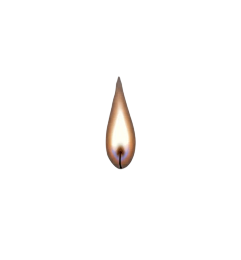
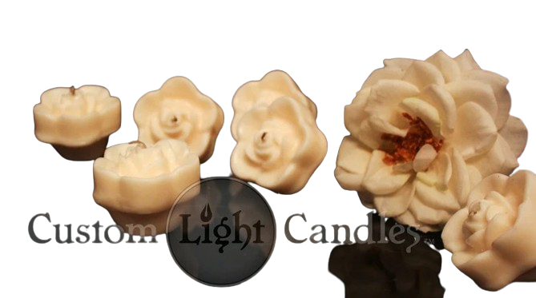

Introduction to Candle Making
Learn the fundamentals of wax, fragrance, safety, wicks and hand pouring.
Ask about beginner classes
Custom Light Candle Academy
Learn candle-making skills from artisan Antoine Montgomery. Explore hands-on instruction options and reach out for upcoming dates and pricing.

Learn the fundamentals of wax, fragrance, safety, wicks and hand pouring.
Ask about beginner classesDiscuss a one-on-one session tailored to your current experience and goals.
Request a private lessonAsk about team-building sessions, celebrations and group learning experiences.
Ask about group classes